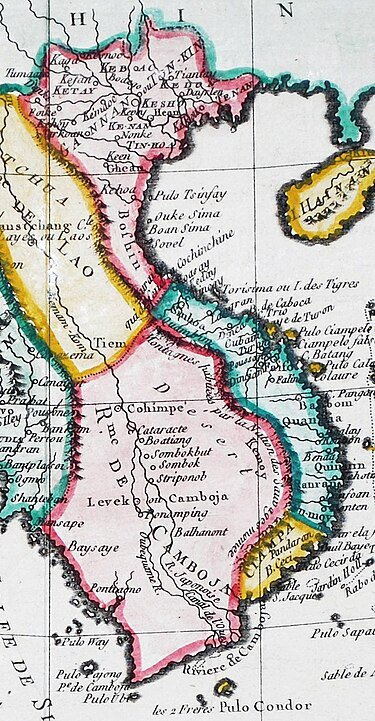

សម័យឧដុង្គ ចាប់ផ្ដើមក្រោយពីព្រះបាទជ័យជេដ្ឋាទី២ ទ្រង់បានឡើងសោយរាជ្យពីព្រះបិតាគឺព្រះស្រីសុរិយោពណ៌ ដែលទ្រង់បានផ្សំផ្គុំព្រះជ័យជេដ្ឋាទី២ នឹង បុត្រីស្ដេចត្រាញ់យួន ដើម្បីធ្វើជាសម្ព័ន្ធមិត្តទប់ទល់នឹងការលុកលុយទន្ទ្រានរបស់សៀម។ សម័យកាលនោះមេទ័ពដែលល្បីឈ្មោះក្នុងប្រវត្តិសាស្ត្រ គឺ តេជោមាស និង តេជោយ៉ត។ ឧដុង្គបើតាមរឿងនិទានយកឈ្មោះតាម តាចាស់ ម្នាក់ឈ្មោះតាដុង្គ រឿងតំណាលថានៅពេលនោះមានក្សត្រមួយអង្គ បានពេញចិត្តនឹងកូនស្រីរបស់គាត់ទើបក្រោយពីរៀបអភិសេកនឹងបុត្រីលោក ហើយព្រះរាជាកតាំងឈ្មោះនៅត្រង់នោះថា ឧដុង្គមានជ័យ លុះក្រោយមកទៀតក៏នៅហៅថា ឧដុង្គ ដូចសព្វថ្ងៃនេះ។
នៅឆ្នាំ ១៦០១ ព្រះបាទស្រីសុរិយោពណ៌បានត្រឡប់ពីប្រទេសសៀម ស្របតាមបំណងប្រាថ្នា របស់ប្រជារាស្ត្រខ្មែរ ដែលបានសុំយាងព្រះអង្គពីទីក្រុងអយុធ្យា ចូលមកតាមច្រកកំពតមកគង់នៅកោះស្លាកែត ជិតភូមិកៀនស្វាយសព្វថ្ងៃ។ ភាពស្ងប់ស្ងាត់ហាក់បីកើតមាននៅតាមកន្លែងខ្លះនៅក្នុងប្រទេស ប៉ុន្តែកន្លែងខ្លះទៀតមានកាកើតចលនាបះបោរ ធ្វើឲ្យប្រជារាស្ត្រភិតភ័យនៅឡើយ។ ក្រោយពីបង្ក្រាបចលនាបះបោរស្រួលបួលហើយ ព្រះអង្គទ្រង់បានបញ្ជាឲ្យគេសង់ព្រះរាជវាំងនៅល្វាឯម ដែលត្រូវនឹងទីតាំងវត្តអរិយក្សត្រសព្វថ្ងៃ ហើយក៏គ្រងរាជ្យនៅទីនោះពីឆ្នាំ ១៦០៣ ដល់ ១៦១៣ ក្នុងព្រះជន្មាយុ ៦០ វស្សា។ ទ្រង់ទទួលរាជាភិសេកជាស្ដេចផែនដីនៅឆ្នាំ ១៦១៣។ ព្រះស្រីសុរិយោពណ៌មានរាជបុត្រពីរអង្គដែលគង់នៅក្នុងប្រទេសសៀមនៅឡើយ គឺព្រះបាទជ័យជេដ្ឋា និងឧទ័យ។ ឆ្នាំ ១៦០៥ ជ័យជេដ្ឋា និងឧទ័យជាអនុជ បានបង្ក្រាបមេបះបោរចាមពីរនាក់ដែលបានត្រួតត្រាលើខេត្តបារា និងដូនណៃ តាំងពីរជ្ជកាលស្ដេចអង្គតន់មកម្ល៉េះ។ ការបាក់បែកក្រុងលង្វែកឆ្នាំ ១៥៩៤ គឺជាការឈឺចាប់របស់ខ្មែរបន្ទាប់ពីការបែកបាក់អង្គរដែលបណ្ដាលមកពីខ្មាំងសត្រូវសៀម។ ការលូកដៃ កកូរតាមល្បិចកល និងធ្វើអន្តរាគមន៍ឥតឈប់ឈរដែលមានទិសដៅធ្វើឲ្យខ្មែរខ្សោយ ដើម្បីលេបទឹកដី នាំឲ្យព្រះបាទស្រីសុរិយោពណ៌មានការធុញទ្រាន់នឹងមេរៀនដដែលៗរបស់សត្រូវសៀម។ ដើម្បីឲ្យមានលំនឹងព្រះអង្គបានធ្វើការសាកល្បងចងសម្ព័ន្ធភាពជាមួយស្ដេចយួន។ ប៉ុន្តែសម្ព័ន្ធថ្មីនេះ មិនបានធ្វើឲ្យប្រទេសខ្មែររស់នៅដោយសុខដុមរមនាឡើយ។ ផ្ទុយទៅវិញវាជាទម្ងន់មួយទៀតមកលើខ្មែរ។ យើងនឹកឃើញតាមរយៈប្រវត្តិសាស្ត្រខ្មែរ ដែលអូសបន្លាយអស់រយៈពេល ២ សតវត្សកន្លះ ទម្រាំដល់ពេលដែលពួកអាណានិគមនិយមបារាំងចូលត្រួតត្រាប្រទេសខ្មែរ។
ផែនទីប្រទេសកម្ពុជានៅសម័យឧដុង្គនាឆ្នាំ១៧៧០នៃគ.ស
ទិដ្ឋភាពភ្នំឧដុង្គ ធានី ឧដុង្គ(១៦២០-១៨៦៣) ,ផ្សេងទៀត ភាសាទូទៅ ខ្មែរកណ្តាល (រហូតទៅដល់ឆ្នាំ១៧៧៧) ខ្មែរ ក្រុមជនជាតិ ខ្មែរ ចាម ព្នង កូឡា ចិន ផ្សេងទៀត សាសនា ព្រះពុទ្ធសាសនាថេរវាទ,វិញ្ញាណនិយម (អ្នកតា) រដ្ឋាភិបាល របបរាជាធិបតេយ្យតាមបែបផ្ដាច់ការ - ១៦១៣-១៦១៨ ស្រីសុរិយោពណ៌ (ដំបូង) - ១៨៦៣-១៩០៤ នរោត្តម (ចុងក្រោយ) ប្រជាជន - ប៉ាន់ស្មាន (ឆ្នាំ ១៨៦៣) ៨៦០,០០០នាក់
ព្រះបាទជ័យជេដ្ឋាទី២ បានឡើងសោយរាជ្យនៅរាជវាំងល្វាឯម ក្នុងព្រះជន្ម ៣៤ វស្សា។ ព្រះអង្គមានមហេសីនាមអង្គចូវជាបុត្រីស្ដេចយួន។ នៅឆ្នាំ ១៦២០ ព្រះអង្គបានលើករាជធានីពីល្វាឯមមកឧដុង្គ។ ព្រះរាជកិច្ចដំបូងគឺ កំណែទម្រង់ច្បាប់នៅក្នុងប្រព័ន្ធតុលាការខ្មែរ ដោយយល់ឃើញថាមានក្រមមួយចំនួនមិនទាន់មានភាពយុត្តិធម៌នៅឡើយ។ ព្រះអង្គបានកែប្រែក្រមបានចំនួន ២៤។ ប៉ុន្តែការងារនេះត្រូវរំខាន ដោយសារការឈ្លានពានរបស់សៀមពីរលើក គឺនៅឆ្នាំ ១៦២១ និង ១៦២២។ ច្បាប់ដែលពិនិត្យរួចត្រូវដាក់ឲ្យអនុវត្តនៅឆ្នាំ ១៦២៤ នៅក្នុងតុលាការ។ ជាលើកទី១ ចាប់តាំងពីរជ្ជកាលព្រះបាទស្រីសុរិយោពណ៌ រហូតដល់ជ័យជេដ្ឋាទី២ ពួកសៀមបានធ្វើការសាកល្បង ដើម្បីដាក់ខ្មែរជាចំណុះម្ដងទៀត។ នៅឆ្នាំ ១៦២១ ស្ដេចសៀមឈ្មោះសុងថាម បានលើកទ័ពដោយផ្ទាល់ជាពីរផ្នែក មួយផ្នែកចូលតាមខេត្តបាត់ដំបង និងពោធិ៍សាត់ ប៉ុន្តែត្រូវទ័ពខ្មែរវាយឲ្យខ្ចាត់ខ្ចាយរត់ចេញតាមខេត្តចន្ទបុរី។ មួយផ្នែកទៀតជាទ័ពជើងទឹក ចូលមកតាមខេត្តកំពត និងបន្ទាយមាសក្នុងបំណងវាយយកខេត្តទ្រាំង ប៉ុន្តែទ័ពសៀមត្រូវបរាជ័យម្ដងទៀត ដោយសារខ្មែរបំពុល។ មួយឆ្នាំក្រោយមក គឺឆ្នាំ ១៦២២ សៀមបានសាកល្បងលើកទ័ពមកម្ដងទៀត ប៉ុន្តែត្រូវបរាជ័យ។ ចាប់តាំងពីពេលនោះមក រហូតដល់ដំណាច់សតវត្សទី១៧ សៀមពុំបានបញ្ចេញសកម្មភាពគាបសង្កត់ខ្មែរគួរឲ្យកត់សម្គាល់ឡើយ។ ប៉ុន្តែផ្ទុយទៅវិញ ពួកយួនបានចាប់ផ្ដើមកកេរទឹកដីខ្មែរបន្តិចម្តងៗ ពីខាងកើត។ ការរៀបអភិសេករវាងជ័យជេដ្ឋាទី២ និងក្សត្រីអង្គចូវ បានធ្វើឲ្យប្រទេសខ្មែរជាប់ជំពាក់រឿងចម្រូងចម្រាស់យ៉ាងខ្លាំង នៅពេលដែលពួកយួនបានលេបយកទឹកដីចាម្ប៉ាទាំងស្រុងនៅសតវត្សទី១៧។ នៅឆ្នាំ ១៦២៣ គណៈបេសកកម្មទូតយួន បានលើកសំណើសុំឲ្យយួនបង្កើតគ្រឹះស្ថានជំនួញនៅប៉ែកខាងត្បូងប្រទេសខ្មែរពីរ មានខេត្តព្រៃនគរ និងកំពង់ក្របី ព្រមទាំងសុំអនុញ្ញាតឲ្យមានសិទ្ធិកាន់កាប់ក្រសួងគយនៅទីនោះផង។ ចំណុចនេះអ្នកប្រវត្តិសាស្ត្របានចាត់ទុកថា ខ្មែរចាញ់កលល្បិចបោកបញ្ឆោតរបស់យួន ដែលសុំត្រួតពិនិត្យពន្ធដារ និងរស់នៅជាបណ្ដោះអាសន្ន។ កាលដែលមិនទាន់សោយរាជ្យ ព្រះជ័យជេដ្ឋាទី២ មានព្រះជន្ម ២៦ វស្សា មានបុត្រពីរអង្គ នាមចៅពញាតូ និង ចៅពញានូ។ លុះសោយរាជ្យបាន ២ ឆ្នាំ ព្រះអង្គមានបុត្រនាមចៅពញាចន្ទ និងបុត្រីនាម ចន្ទវតី (ឬបុប្ផាវតី)។ ឯព្រះឧទ័យរាជា មានបុត្រ៤អង្គ គឺ អ្នកអង្គនន់ទី១ អ្នកអង្គសូរ អ្នកអង្គតន់ និងអ្នកអង្គអិម។
នៅក្រោយរជ្ជកាលព្រះបាទជ័យជេដ្ឋាទី២ ប្រទេសកម្ពុជាបានធ្លាក់ទៅក្នុងភាពវឹកវរ ចាប់តាំងពីដើម្បីសតវត្សទី១៧ រហូតដល់សតវត្សទី១៩ ធ្វើឲ្យខ្មែរបាត់បង់នូវឯករាជ្យភាព។ ហេតុការណ៍នេះបណ្ដាលមកពីការលូក កកូរកិច្ចការផ្ទៃក្នុងរបស់ខ្មែរ ពីសំណាក់សត្រូវជិតខាងទាំងពីរ។ ឆ្នាំ ១៦២៦ ព្រះធម្មរាជា ឬព្រះរាជសំភារបានសាងព្រះផ្នួសនៅវត្តមួយក្នុងខេត្តមហានគរ។ កាលដែលព្រះបាទជ័យជេដ្ឋាទី២ សោយទិវង្គតទៅ កិច្ចការប្រទេសជាតិត្រូវប្រគល់ឲ្យព្រះឧទ័យជាឧបរាជដែលមានមហេសីឈ្មោះនាងចន្ទវតី (ឯកសារខ្លះបាននិយាយថា បុប្ផាវតី) ដែលត្រូវជាគូដណ្ដឹងរបស់ពញាតូ។ កាលដែលព្រះបាទជ័យជេដ្ឋាសោយទិវង្គតទៅ ពួកនាម៉ឺនបានយាងព្រះឧទ័យជាព្រះអនុជឲ្យឡើងសោយរាជសម្បត្តិ តែព្រះអង្គប្រកែក។ ព្រះធម្មរាជាបានយល់ព្រមឡើងសោយរាជ្យនៅឆ្នាំ ១៦២៩ នៅរាជវាំងកោះឃ្លោក នៅប៉ែកឦសានជ្រោយចង្វា។ នៅឆ្នាំ ១៦៣៣ ព្រះអង្គបានលើកទ័ពទៅវាយសៀម ក្នុងបំណងដណ្ដើមយកខេត្តនគររាជសីមាមកវិញ ប៉ុន្តែមិនបានសម្រេច ព្រោះសៀមបានលើកទ័ពជើងទឹកចូលតាមកំពតក្នុងបំណងវាយយកខេត្តភាគខាងត្បូងនៃប្រទេសកម្ពុជា។ ព្រះធម្មរាជាត្រូវសុគតយ៉ាងអណោចអធមនៅឆ្នាំ ១៦៣៤ ដោយស្នាដៃទាហានរបស់ព្រះឧទ័យ និងទាហានព័រទុយហ្គាល់។ ឃាតកម្មនេះបណ្ដាលមកពីរឿងស្នេហារវាងចន្ទវតី និងព្រះធម្មរាជាកាលនៅវ័យជំទង់។ ស្នេហានេះបានត្រូវបំភ្លេចម្ដងរួចមកហើយ នៅពេលដែលធម្មរាជាបានឃ្លាតចាកទៅសាងព្រះផ្នួស លុះដល់ធម្មរាជាឡើងសោយរាជ្យទើបរឿងស្នេហានេះបានឆាបឆេះឡើងវិញ បណ្ដាលឲ្យឧទ័យត្រូវជាស្វាមីព្រះនាងមានការក្រេវក្រោធជាខ្លាំង ក៏លើកទ័ពតាមប្រហារ។ ស្រីធម្មរាជាជាស្ដេចមួយអង្គដែលមានព្រះទ័យជ្រះថ្លាចំពោះព្រះពុទ្ធសាសនា ព្រមទាំងមានចំណេះជ្រៅជ្រះខាងអក្សរសាស្ត្រ។ ព្រះអង្គបានទុកស្នាដៃជាច្រើនសម្រាប់ទូន្មានកូនខ្មែរ។
បុត្រព្រះជ័យជេដ្ឋាមួយអង្គទៀត ព្រះនាមចៅពញានូ (នាមសម្រាប់រាជ្យ ព្រះបាទសម្ដេច ព្រះអង្គទង រាជាធិរាជរាមាធិបតី) បានឡើងសោយរាជ្យនៅឆ្នាំ ១៦៣៥។ ប៉ុន្តែក្រោយមកទៀត រាជសម្បត្តិនេះបានធ្លាក់ក្នុងដៃបុត្រព្រះឧទ័យនាមបទុមរាជា (ឬ ព្រះអង្គនន់) ដោយសារមានការជ្រែករាជ្យ (១៦៣៩ - ១៦៤១)។ ដូចនេះចៅពញាចន្ទដែលត្រូវជាបុត្រពៅព្រះជ័យជេដ្ឋា មានព្រះទ័យក្រេវក្រោធជាខ្លាំង ក៏នាំបក្សពួកទៅធ្វើឃាតបទុមរាជា ហើយក៏ឡើងសោយរាជ្យ (១៦៤១ - ១៦៥៩)។ នៅឆ្នាំ ១៦៤៤ ព្រះពញាចន្ទបានចាប់ចិត្តប្រតិព័ទ្ធលើក្រមុំចាម នៅភូមិឃ្លាំងស្បែក ស្ថិតនៅលើត្រើយខាងលិចទន្លេសាប ចម្ងាយ ១០ គីឡូម៉ែត ខាងត្បូងកំពង់លួង។ ដំណឹងនេះធ្វើឲ្យប្រជារាស្ត្រក្នុងនគរមានការអាក់អន់ចិត្តជាខ្លាំង ក៏នាំគ្នាហៅថាព្រះរាមចូលសាសន៍ (ឯកសារខ្លះបាននិយាយថា ព្រះអង្គបានប្ដូរនាមពីពញាចន្ទមក អ៊ីប្រាហ៊ីម)។ ទ្រង់បានបោះបង់ជំនឿព្រះពុទ្ធសាសនា ប្រកាន់យកឥស្លាមសាសនា។ នៅក្នុងរាជវាំងឧដុង្គ គេឃើញមានមន្ត្រីចាមចូលមកធ្វើការជំនួសមន្ត្រីខ្មែរ។ ការប្រព្រឹត្តផ្ដេសផ្ដាសខុសទម្លាប់នាំឲ្យព្រះពញាចន្ទបាត់បង់ទំនុកចិត្ត និងការគាំទ្រពីប្រជារាស្ត្រខ្មែរ ហើយប្រការនេះធ្វើឲ្យបុត្រព្រះឧទ័យពីរអង្គ គឺ អង្គសូរ និងអង្គតន់មានឱកាសនឹងសងសឹក ដើម្បីដណ្ដើមរាជ្យសម្បត្តិ។ ក្សត្រទាំងពីរអង្គនេះបានដើរប្រមូលបក្សពួក និងប្រជារាស្ត្រដែលមានទឹកចិត្តស្អប់ព្រះរាមចូលសាសន៍។ លុះដល់ប្រមូលទាហានបានហើយ ទ័ពទាំងសងខាងក៏បានបើកសមរភូមិនៅសំរោងទងក្នុងឆ្នាំ ១៦៥៣។ តែទ័ពអង្គសូរ និងអង្គតន់ត្រូវទទួលបរាជ័យ។
នៅឆ្នាំ ១៦៥៥ អង្គសូរដែលមានបង្អែកពីក្សត្រីអង្គចូវ បានទៅពឹងទ័ពយួនដើម្បីវាយជាមួយទ័ពព្រះរាម (ពញាចន្ទ)។ ឆាកសង្គ្រាមជើងទឹកមួយបានផ្ទុះឡើងរវាងទ័ពយួន ដែលបញ្ជាដោយឧត្តមសេនីយអុង-ហ៊ាងធូ (អុង-បៀងធូ) និងទ័ពព្រះរាមនៅព្រែកតាទែន។ ព្រះរាមត្រូវទ័ពយួនចាប់បានហើយបញ្ជូនទៅឃុំឃាំងនៅក្រុងវ៉េ។ ដោយដឹងជាមុននូវគម្រោងការរបស់យួន ដើម្បីវាយយកក្រុងឧដុង្គព្រមទាំងមានបំណងចង់ត្រួតត្រាប្រទេសកម្ពុជាទាំងមូល ទើបអង្គសូរ និងអង្គតន់រៀបចំទ័ពដើម្បីទប់ទល់ នៅក្រុងឧដុង្គដូចគេស្មានមែន ប៉ុន្តែត្រូវបរាជ័យ ដកទ័ពទៅវិញ។ ឧត្ដមសេនីយយួនអុង-ហ៊ាងធូ មានការក្ដៅក្រហាយ ព្រោះវាយយកក្រុងឧដុង្គមិនបាន ក៏ចុះទៅប្រទេសយួន ដើម្បីក្រាបបង្គំថ្វាយស្ដេចយួន អំពីភាពរមិលគុណរបស់ខ្មែរ លុះជ្រាបដូចនេះហើយ ស្ដេចង្វៀងក៏បានបញ្ជាឲ្យគេដោះលែងព្រះរាម ឲ្យមកច្បាំងជាមួយអង្គសូរ និងអង្គតន់វិញ ប៉ុន្តែចៃដន្យអាក្រក់ ស្ដេចអង្គនេះត្រូវសុគតនៅតាមផ្លូវដោយជំងឺ។ អង្គសូរបានឡើងសោយរាជ្យចាប់ពីឆ្នាំ ១៦៥៩ ដល់ ១៦៧២។ ស្ដេចអង្គនេះត្រូវព្រះរាជសុណិសានាមស្រីជ័យជេដ្ឋា (បុត្រអង្គនន់ទី១) ធ្វើឃាតហើយឡើងសោយរាជ្យ (១៦៧២ - ១៦៧៣) ដោយយកអង្គឡីជាមហេសីអង្គសូរ ដែលត្រូវជាព្រះមាតុច្ឆាធ្វើជាមហេសី។ ប៉ុន្តែបទុមរាជាបានត្រូវមហេសីអង្គសូរទៅពឹងចាមឲ្យមកធ្វើឃាតម្ដងវិញ។ ប្រទេសខ្មែរកើតវឹកវរដោយវិបត្តិផ្ទៃក្នុង ដែលបណ្ដាលមកពីការល្មោភអំណាចឥតឈប់ឈរ។ ប្រជារាស្ត្ររងទុក្ខវេទនាដោយសារសង្គ្រាមឥតស្រាកស្រាន្ត។ ពួកបរទេសដែលមករកស៊ីនៅស្រុកខ្មែរ នាំគ្នាំរត់ចោលហាងទំនិញ។ ឆ្លៀតឱកាសនេះ សៀមបានទាក់ទាញក្រុមហ៊ុនឥណ្ឌាខាងកើតរបស់អង់គ្លេសឲ្យមករកស៊ីនៅក្នុងប្រទេសសៀមវិញ ព្រោះប្រទេសសៀមមានសន្តិភាពល្អ។ នៅពេលដែលអង្គសូរសុគត ក្សត្រអង្គតន់ដែលជាអនុជ និងអង្គនន់ជាក្មួយ (កូនអង្គអិម) បានចុះទៅប្រទេសយួនដើម្បីសុំជំនួយទ័ព។ នៅពេលត្រឡប់ពីប្រទេសយួនមកវិញក្នុងឆ្នាំ ១៦៧៣ ក្សត្រទាំងពីរអង្គបានឃើញក្សត្រអង្គជីដែលត្រូវជាបុត្រច្បងរបស់អង្គសូរ កំពុងស្ថិតនៅក្នុងរាជសម្បត្តិនៅឡើយ ក៏កើតក្ដីត្រេកអរឥតឧបមា ព្រោះឃើញក្រុមញាតិវង្សរបស់ទ្រង់បានឡើងសោយរាជ្យ។ តែផ្ទុយទៅវិញ អង្គជីបែរជាមិនសប្បាយព្រះទ័យកើតក្ដីព្រួយបារម្ភព្រោះខ្លាចក្សត្រទាំងពីរលើកទ័ពយួនមកក្នុងពេលនេះដើម្បីដណ្ដើមរាជ្យសម្បត្តិទៅវិញ។ ការភ័ន្តច្រឡំនេះ បានតម្រូវឲ្យស្ដេចអង្គជីលើកទ័ពច្បាំងជាមួយអង្គតន់ជាមា និងអង្គនន់ជាប្អូន។ ទ័ពទាំងសងខាងបានប៉ះទង្គិចគ្នាយ៉ាងសាហាវ។ សង្គ្រាមចេះតែបន្តទៅមិនទាន់ដឹងឈ្នះចាញ់។ ចំណែកឯអង្គតន់បានប្រឈួនជាទម្ងន់ហើយក៏សុគតទៅ ដោយទុកឲ្យអង្គនន់ជាក្មួយបញ្ជាទ័ពជំនួស។ ឯស្ដេចអង្គជីក៏បានសុគតនៅឆ្នាំ ១៦៧៥ រួចព្រះអនុជនាមអង្គស៊ូក៏បានឡើងសោយរាជ្យជំនួស។ ស្ដេចអង្គនេះបានធ្វើឲ្យទ័ពយួនបរាជ័យ ហើយអង្គនន់ក៏បានរត់ទៅជ្រកកោនក្នុងប្រទេសយួនវិញ។ ប្រាំឆ្នាំក្រោយមក អង្គនន់បានត្រឡប់មកតាំងទីបន្ទាយជាថ្មីនៅជ្រោយចង្វាទល់មុខភ្នំពេញ រួចទើបចាប់ផ្ដើមវាយរំខានទីក្រុងឧដុង្គឥតឈប់ឈរ ប៉ុន្តែមិនបានទទួលជ័យជំនះធំដុំឡើយ។ អង្គស៊ូ បានទៅគង់នៅក្នុងរាជវាំងសំរោងទងដែលស្ថិតនៅចម្ងាយ ៣០ គីឡូម៉ែតពីឧដុង្គ ទុកតែព្រះមាតាឲ្យគង់នៅក្រុងឧដុង្គ។ អង្គនន់បានវាយចូលឧដុង្គបាននៅឆ្នាំ ១៦៨៤ រួចក៏ចាប់មាតាអង្គស៊ូមកឃុំទុកនៅក្នុងបន្ទាយជ្រោយចង្វារ។ ប៉ុន្តែក្រោយមកអង្គស៊ូបានចូលទៅរំដោះមាតាចេញដោយគ្មានការបង្ហូរឈាម។
នៅចុងឆ្នាំ ១៧៧៩ ព្រះអង្គអេងបានត្រូវលើកឲ្យគ្រងរាជ្យក្នុងព្រះជន្ម ៧ ព្រះវស្សា។ ប៉ុន្តែកិច្ចការផែនដីស្ថិតនៅក្នុងដៃចៅហ្វ៊ាមូទាំងអស់។ ក្នុងឆ្នាំ ១៧៩៤ ព្រះអង្គអេងបានរៀបអភិសេកនៅក្នុងព្រះជន្ម ២២ វស្សានៅទីក្រុងបាងកក។ គ្រឿងបញ្ចក្សេតជាពិសេសគឺព្រះខ័ឌ្គរាជ្យដែលចៅហ្វ៊ាបែនបានលួចយកទៅឲ្យសៀម ក៏ត្រូវបង្វិលមកឲ្យខ្មែរវិញ នៅដើមខែ មីនា ១៧៩៤។ ព្រះអង្គអេងទ្រង់យាងចូលមកក្នុងនគរតាមផ្លូវគោកឆ្លងកាត់ខេត្តបាត់ដំបង ពោធិ៍សាត់ និងកំពង់ឆ្នាំង អស់រយៈពេល ២១ ថ្ងៃ។ នៅសងខាងផ្លូវមានប្រជារាស្ត្រឈរទទួលស្វាគមន៍ហ៊ោកញ្ជ្រៀវយ៉ាងខ្លាំង។ នៅរាជវាំងឧដុង្គ ពួកមន្ត្រីបាននាំគ្នារៀបចំពិធីទទួលយ៉ាងអឹកធឹក ដើម្បីទទួលព្រះមហាក្សត្រថ្មី។ ប៉ុន្តែមានមន្ត្រីក្បត់ខ្លះដូចជា បែន កែប និងកន ដូចជាពុំសូវពេញចិត្ត ក៏ធ្វើជាទទួលរាក់ទាក់ទាំងបង្ខំចិត្ត។ នៅក្នុងរជ្ជកាលព្រះអង្គ ប្រជារាស្ត្រនៅក្នុងនគរហាក់ដូចជាបានសុខស្រួល លើកលែងតែខេត្តភាគខាងត្បូង រាស្ត្រខ្មែរត្រូវរងទុក្ខវេទនាដោយសារគូបដិបក្ខយួន គឺពួកចលនាតៃសឺន និងពួកស្ដេចង្វៀនតែងតែយកប្រទេសខ្មែរធ្វើជាសមរភូមិ។ ប្រជារាស្ត្រខ្មែរត្រូវជាប់កំណែនទ័ព ដោយសារស្ដេចខ្មែរកែនទៅជួយយួន ខ្មែរជាអ្នកផ្ដល់ស្បៀង និងដឹកជញ្ជូនឲ្យយួន។ បក្សពួកយួនដែលឈ្លោះគ្នានៅលើទឹកដីខ្មែរ បានបង្កវិនាសកម្មដល់អាយុជីវិត ទ្រព្យសម្បត្តិ ដុតបំផ្លាញផ្ទះសម្បែង និងឆក់ប្លន់ទ្រព្យសម្បត្តិរបស់ខ្មែរឥតឈប់ឈរ។ ជួនកាលទៀតសមរភូមិបានធ្វើឡើងនៅរដូវវស្សា នាំឲ្យការស្ទូងដករាំងស្ទះ បណ្ដាលឲ្យខ្មែរដាច់ស្បៀងគ្មានអ្វីចិញ្ចឹមគ្រួសាររហូតដល់ដាច់ពោះស្លាប់ក៏មាន។
ឆ្នាំ ១៧៨៣ ស្ដេចសៀមបានតែងតាំងមន្ត្រីបីនាក់ មានឈ្មោះ បែន កែប និងកន ដោយខុសច្បាប់ ឲ្យធ្វើជាចៅហ្វាយខេត្តបាត់ដំបង និងពោធិ៍សាត់។ ដើម្បីបំពេញបំណងចៅហ្វាយសៀម មន្ត្រីទាំងនោះក៏បានសរសេរសំបុត្រមួយដោយចាត់ឲ្យមន្ត្រីសៀមយកមកថ្វាយព្រះអង្គអេងនៅឧដុង្គ មានសេចក្តីថា យើងទាំងអស់គ្នាប្រាថ្នាចង់ឲ្យព្រះចៅសៀមផ្ញើសារមកឲ្យស្ដេចស្រុកខ្មែរ ដើម្បីបញ្ចូលខេត្តបាត់ដំបង មហានគរ និងចុងកាល់ ទៅក្នុងទឹកដីសៀមដើម្បីជាកិច្ចតបស្នងដល់ព្រះចៅសៀម ដែលបានចិញ្ចឹមបីបាច់ថែរក្សាព្រះអង្គ (អង្គអេង) នៅពេលដែលព្រះអង្គបានរស់នៅក្នុងស្រុកសៀម។ លុះអានសំបុត្រនោះចប់ហើយ ព្រះអង្គអេង មានការក្ដុកក្ដួលក្នុងព្រះទ័យដោយនឹកស្ដាយទឹកដីយ៉ាងក្រៃលែងរួចក៏បានផ្ញើរសារត្រឡប់ទៅឲ្យសៀមវិញដែលមានសេចក្តីថា ខេត្តទាំងនេះរួមគ្នាបានជាទឹកដីមួយភាគធំរបស់ប្រទេសកម្ពុជា បើខ្មែរលើកខេត្តទាំងនោះទៅឲ្យព្រះចៅសៀម នោះប្រទេសកម្ពុជានៅសល់តែចម្រៀកដីមួយដ៏តូច មិនសក្ដិសមឈ្មោះជាប្រទេសឡើយ។ ចម្លើយរបស់ស្ដេចអង្គអេង ធ្វើឲ្យព្រះចៅរាមាទី១ ក្រេវក្រោធជាខ្លាំង រួចក៏ប្រើពាក្យគំរាមកំហែងនៅក្នុងសារមួយដែលផ្ញើជាលើកចុងក្រោយថា បើមហាក្សត្រខ្មែរមិនព្រមកាត់ខេត្តទាំងនោះទៅឲ្យសៀមទេនោះ ប្រទេសយើងទាំងពីរនឹងក្លាយជាសត្រូវនឹងគ្នា។ ប្រទេសកម្ពុជាពេលនោះបានបាត់បង់ពួកមន្ត្រីដែលមានសមត្ថភាព និងស្មោះត្រង់ ចំណែកឯវិស័យការពារប្រទេស យើងក៏គ្មានទ័ពសម្រាប់ការពារខ្លួនទប់ទល់នឹងការវាយលុកណាមួយពីខាងក្រៅ។ ចំណែកឯវិស័យសេដ្ឋកិច្ចទៀតសោត បានធ្លាក់ចុះដុនដាបដោយសង្គ្រាមក្នុងស្រុក។ កត្តាអស់ទាំងនេះដែលធ្វើឲ្យព្រះអង្គពុំហ៊ានតបតនឹងការលោភលន់របស់សៀម ក៏សូមអង្វរឲ្យព្រះចៅសៀមយកខេត្តទាំងនោះតែក្នុងខណៈដែលព្រះចៅសៀម (រាមាទី១) មានព្រះជន្មនៅឡើយ។ លុះដល់ព្រះអង្គសុគត ខ្មែរសុំយកខេត្តនេះមកបញ្ចូលក្នុងនគរកម្ពុជាដូចដើមវិញ។ ខេត្តទាំងនោះត្រូវធ្លាក់ទៅក្នុងកណ្ដាប់ដៃសៀមនៅឆ្នាំ ១៧៩៥ ដោយសារមន្ត្រីក្បត់ជាតិល្ងង់ខ្លៅឆ្កួតវង្វេងនឹងបុណ្យសក្តិ ភ្លេចគិតដល់កំណើតខ្លួន។ ខែ មីនា ១៧៩៦ ព្រះអង្គអេងបានផ្ទេរកិច្ចការប្រទេសទៅឲ្យឧបរាជប៉ុក រួចក៏យាងទៅកាន់រាជធានីបាងកក ក្នុងបំណងសុំឲ្យព្រះចៅសៀមប្រគល់ខេត្តខ្មែរមកវិញ។ តែស្ដេចសៀមធ្វើឫកក្រអឺតក្រទមមិនព្រមស្ដាប់សេចក្ដីទទូចអង្វរឡើយ។ បន្ទាប់ពីគង់នៅប្រទេសសៀមមិនបានផ្លែផ្កាមកព្រះអង្គក៏បានយាងនិវត្តន៍ចូលប្រទេសវិញ នៅខែ ឧសភា ឆ្នាំ ១៧៩៦។ ប្រាំពីរខែក្រោយមក ព្រះអង្គក៏សុគតនៅរាជធានីឧដុង្គដោយជំងឺគ្រុនចាញ់។ ចាប់ពីឆ្នាំ ១៧៩៦ ដល់ ១៨០៥ មក កិច្ចការប្រទេសស្ថិតនៅក្នុងដៃចៅហ្វ៊ាប៉ុក។ មន្ត្រីប៉ុកបានបញ្ជាឲ្យគេសង់ចេតិយ៍នៅលើកំពូលភ្នំឧដុង្គប៉ែកខាងកើតសម្រាប់ដាក់អដ្ឋិធាតុព្រះអង្គអេង។ ពេលព្រះអង្គអេងចូលទិវង្គត ព្រះអង្គចន្ទជារាជបុត្រទើបតែមានព្រះជន្មបាន ៦ វស្សា ដូចនេះកិច្ចការប្រទេសជាតិត្រូវមន្ត្រីប៉ុកជាអ្នកទទួលបន្ទុក។
នៅក្នុងការគ្រប់គ្រងរបស់ខ្លួនមន្ត្រីប៉ុកបានលើកទ័ពទៅជួយសៀម នៅពេលដែលស្ដេចភូមាឈ្មោះ ប៉ូដាវប៉ាយា វាយលុកប្រទេសសៀមពីប៉ែកខាងជើងនៅចន្លោះឆ្នាំ ១៧៨២ - ១៨១៩។ ស្ដេចយួនក៏បានបញ្ជាឲ្យខ្មែរកែនទ័ពចំនួន ១០ ពាន់នាក់នៅឆ្នាំ ១៧៩៩ នៅតាមខេត្តព្រៃវែង បាភ្នំ រំដួល និងស្វាយទាប បញ្ជាដោយឧកញ៉ាវាំងឈ្មោះឡុង ដើម្បីជួយស្ដេចង្វៀង ប្រឆាំងនឹងចលនាតៃសឺន។ ទ័ពខ្មែរធ្វើដំណើរកាត់ប្រទេសទៅទិសខាងជើងតាមតំបន់ព្រៃក្រាស់ដែលសម្បូរជំងឺគ្រុនចាញ់ រួចចុះមកតាមទិសខាងជើងក្នុងខេត្តង៉ែអាន ដោយបានធ្វើឲ្យទ័ពតៃសឺនបរាជ័យ រួចក៏ត្រឡប់មកប្រទេសវិញនៅឆ្នាំ ១៨០២។
ព្រះអង្គចន្ទដែលជាបុត្ររបស់ព្រះបាទអង្គអេង បានរៀបអភិសេកនៅឆ្នាំ ១៨០៦ នៅទីក្រុងបាងកក ដែលមាននាមសម្រាប់រាជ្យថាឧទ័យរាជា។ ព្រះអង្គត្រូវយាងមកសោយរាជ្យនៅឧដុង្គវិញ។ នៅស្រុកសៀមឯនោះវិញ ស្ដេចសៀមឈ្មោះតាកស៊ីនបានចូលទិវង្គតនៅឆ្នាំ ១៨០៩។ រាជសម្បត្តិត្រូវប្រគល់ឲ្យបុត្រឈ្មោះរាមាទី២។ ព្រះអង្គចន្ទទ្រង់បានចាត់ព្រះអនុជ និងមន្ត្រីខ្មែរខ្លះទៅចូលរួមក្នុងពិធីបុណ្យសពស្ដេចសៀម។ ចំណែកឯនៅខេត្តបាត់ដំបងឯណោះវិញ អភ័យធីបែសបែនបានស្លាប់នៅឆ្នាំ ១៨០៩ ដែរ។ ព្រះចៅរាមាទី២ បានតែងតាំងកូនប្រុសមន្ត្រីបែន ឈ្មោះវិបុលរាជបែន ជាចៅហ្វាយខេត្តបាត់ដំបងជំនួសឪពុក។ ការតែងតាំងមន្ត្រីថ្នាក់ខេត្តនេះបានស្ដែងឲ្យឃើញការកាន់កាប់ខេត្តភាគខាងលិចយ៉ាងស៊ប់ ដោយបង្កើតបែបផែនរដ្ឋបាលតាមបែបសៀម។ នៅឆ្នាំ ១៨១០ ព្រះអង្គចន្ទបានទទួលដំណឹងពីអយ្យកោថា មានមន្ត្រីពីរនាក់ឈ្មោះក្រឡាហោមមឿង និងចក្រីកែប បានផ្សំគំនិតគ្នាដើម្បីធ្វើឃាតព្រះអង្គ។ ជ្រាបដូចនេះហើយ ស្ដេចអង្គចន្ទបានប្រគល់កិច្ចការទៅឲ្យមន្ត្រីតីរៀបចំផែនការសម្លាប់មន្ត្រីទាំងពីរនាក់។ ពេលនោះតីបានទៅពឹងជ្វាម្នាក់ឈ្មោះទួនវ៉ា។ រឿងអាស្រូវនេះបានលេចឮទៅដល់ប្រជារាស្ត្រទូទាំងនគរ ដែលកើតក្ដីអាណិតអាសូរដល់មន្ត្រីទាំងពីរនេះ ព្រោះគេយល់ថាជាមន្ត្រីល្អ។ ការធ្វើឃាតនេះនាំឲ្យមានការសន្និដ្ឋានពីរយ៉ាង៖ អាចនិយាយបានថាមន្ត្រីតីធ្វើនេះដើម្បីបុណ្យសក្តិ ជារឿងមួលបង្កាច់មន្ត្រីស្មោះត្រង់។ ម្យ៉ាងទៀតអាចនិយាយថា រឿងនេះជាការពិត ព្រោះកាលនៅបាងកកប្រហែលជាមន្ត្រីទាំងពីរនេះបានរួមគំនិតគ្នា ធ្វើឃាតព្រះអង្គចន្ទ ដើម្បីលើកក្សត្រអង្គស្ងួនឲ្យឡើងសោយរាជ្យ។ ដោយសាររឿងនេះធ្វើឲ្យចៅហ្វាយខេត្តខ្លះ ដូចជាកំពង់ស្វាយ និងបាត់ដំបង ដែលជាសត្រូវនឹងអង្គចន្ទបានរៀបចំទ័ព ដើម្បីទប់ទល់ការវាយប្រហារណាមួយរបស់ទ័ពព្រះរាជា។